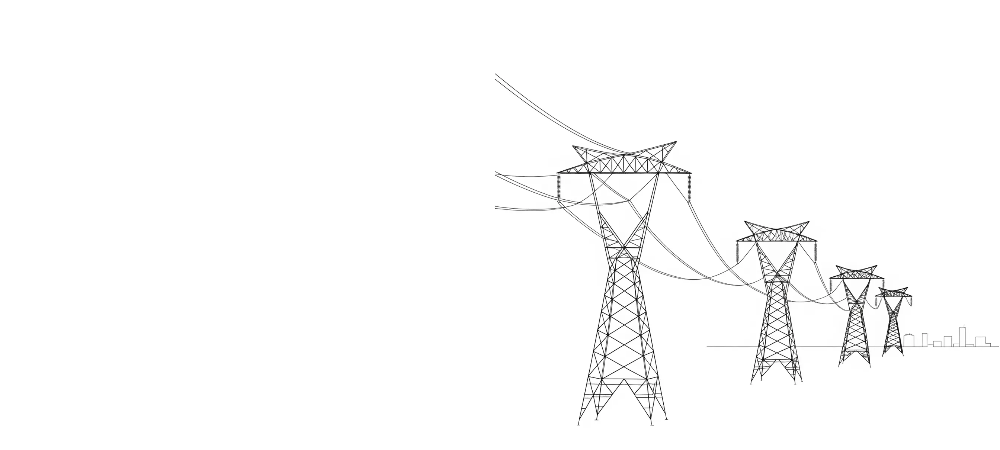
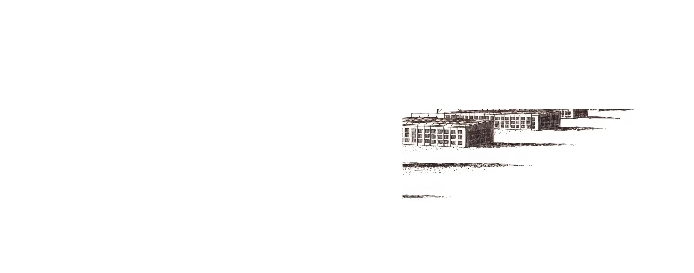
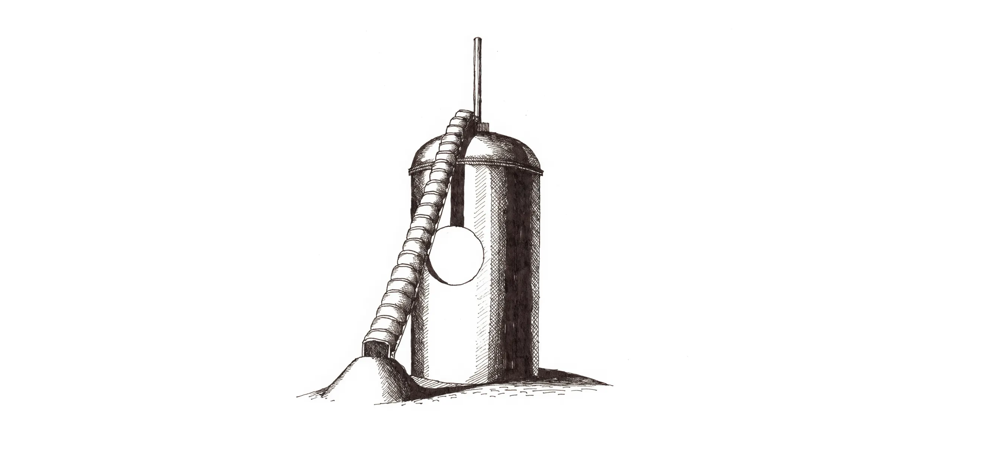
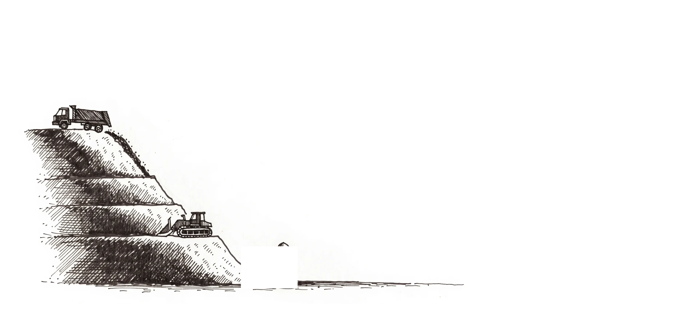
FIG. 1: Feedstock, conversion, and data center load on one site, on existing high voltage lines. Numerals are live: select one to read its claim.
Prepared for allocators deciding their energy, AI, and data center exposure before 2030.
NovoTerra Energy holds United States access to a proven high temperature conversion process that converts the waste nobody wants into baseload electricity, process steam, recoverable clean water, and a stable mineral product.
This prospectus discloses the mechanism, the claims, the reference design, and the basis of every figure. Correspondence is invited.
The prevailing thesis in energy investment is a bet on batteries, with meaningful deployment placed on a horizon near 2030. The debate concerns chemistry and business models, not fuel.
Meanwhile a fuel source that renews every day sits at the perimeter of every major metropolitan area: already connected to high voltage infrastructure, already permitted as an industrial site, and already paid to receive its feedstock. This document concerns what can be built now.
Data centers are being planned faster than generation can be built, and their buyers need baseload power that runs at night and in still air. The demand is not a forecast; it is in the interconnection queue today.
PFAS scrutiny of land applied manure, biosolids, and compost is rising fast. Disposal is converting into liability, which means fuel is becoming something suppliers pay to hand over.
New interconnection takes years. Sites that already carry high voltage lines are the scarcest asset in energy, and landfills have carried them for decades.
All three forces converge on the same acre.
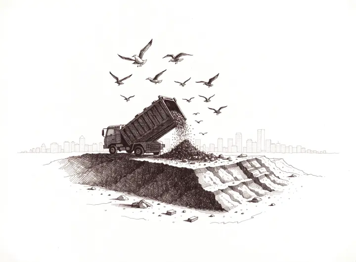
Feedlot and dairy manure, sewage sludge, slaughterhouse residuals, municipal solid waste, and landfill content renew daily and burn independent of weather. The fuel never stops arriving.
NovoTerra fuel thesis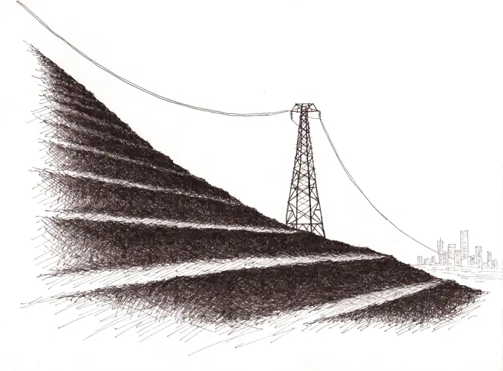
Landfills ring the perimeter of every major metropolitan center, exactly where data centers want to build, and they already carry high voltage interconnection. New interconnection takes years; this land skips the queue.
NovoTerra siting thesis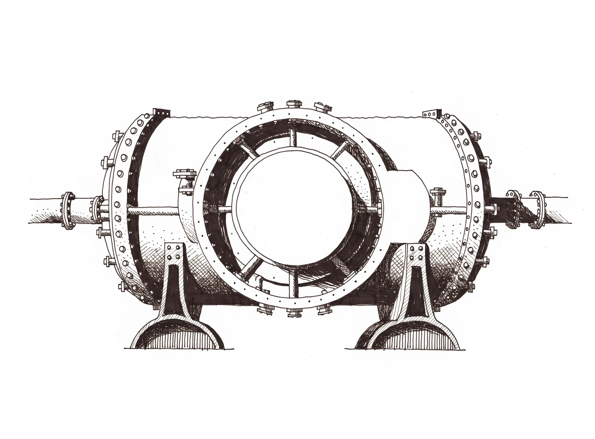
FIG. 2: Cross section of the conversion vessel at operating temperature. The core runs continuously; the fuel arrives daily.
Based on real operating field data. May vary with operational conditions and site specific factors.
| Plant | |
|---|---|
| Thermal rating | 15 MWth (about 4 MWe net at 90 percent availability) |
| Site footprint | 2 to 3 acres, within 100 to 300 ft of the steam host |
| Grid connection | Existing high voltage interconnection at the parcel |
Unit pricing is pending from the technology owner and is deliberately absent from this document.
FIG. 3: Reference siting plan, illustrative. The center occupies 2 to 3 acres inside the landfill parcel, beside the existing interconnection.
TRL 8, not a horizon bet. The process has operated since 2012 near Singapore at the ITEA 15 MW facility on Jurong Island, and since 2021 in Italy. Everything else on this page is engineering; this sheet is the receipt.
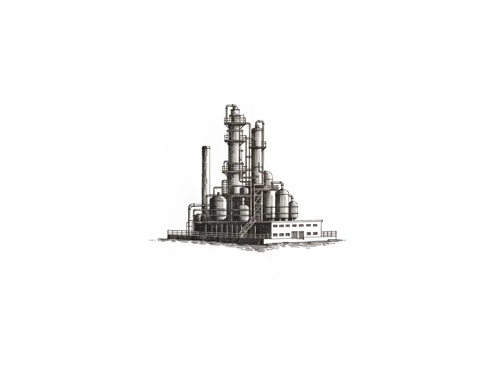
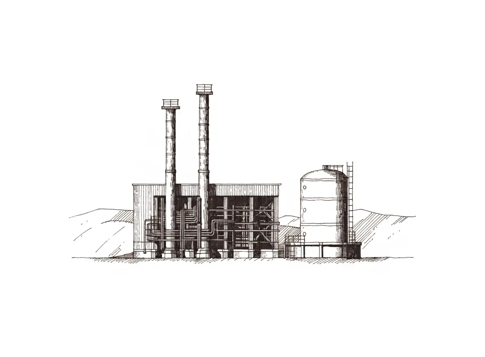
These installations belong to the technology's originators. NovoTerra presents them as proof of the process, never as its own track record; there is no NovoTerra installation in the United States to date. Every performance figure in this prospectus is technology evidence from these plants and from the reference design.
Plates are drawn depictions, not photographs.
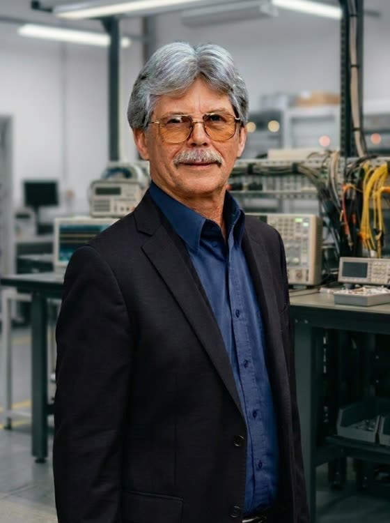
Chief Materials Engineer
Four decades guarding capital budgets. The institutions that could not afford a wrong decision brought Cliff in first; the record below is why.
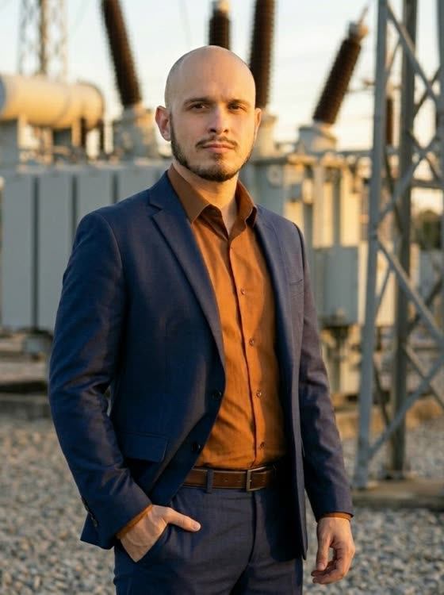
Project Manager
Spartanburg based entrepreneur and energy advocate with 19 years connecting people, capital, and opportunity across 14+ industries and 70+ specialized markets. Former director of FDA registered clinical trials.
He leads business development, legislative relationships, and the vendor neutral program strategy that keeps this program accountable to client outcomes, not product margins. He operates fee for performance and has committed to dedicating profits to improving American infrastructure.
This prospectus is distributed for discussion with qualified investors and partners. It is a technical disclosure, not an offer of securities, and it contains no pricing by design.
The fuel renews tonight.